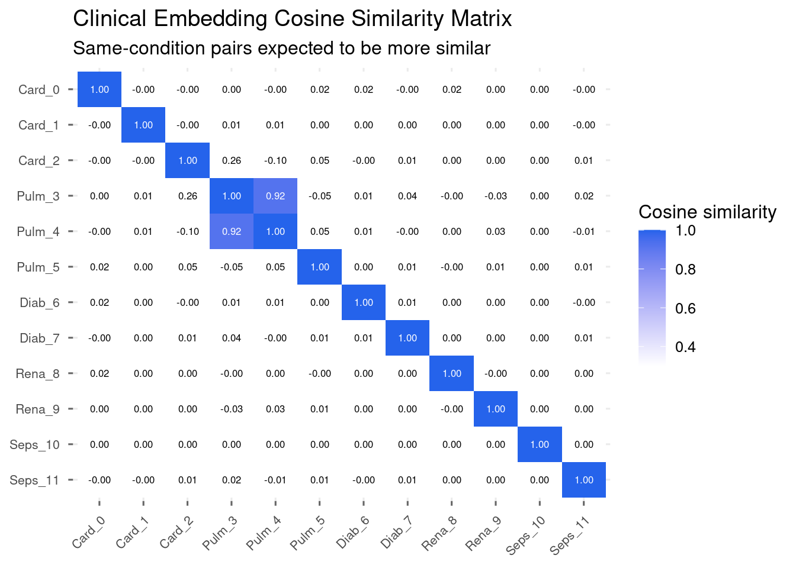
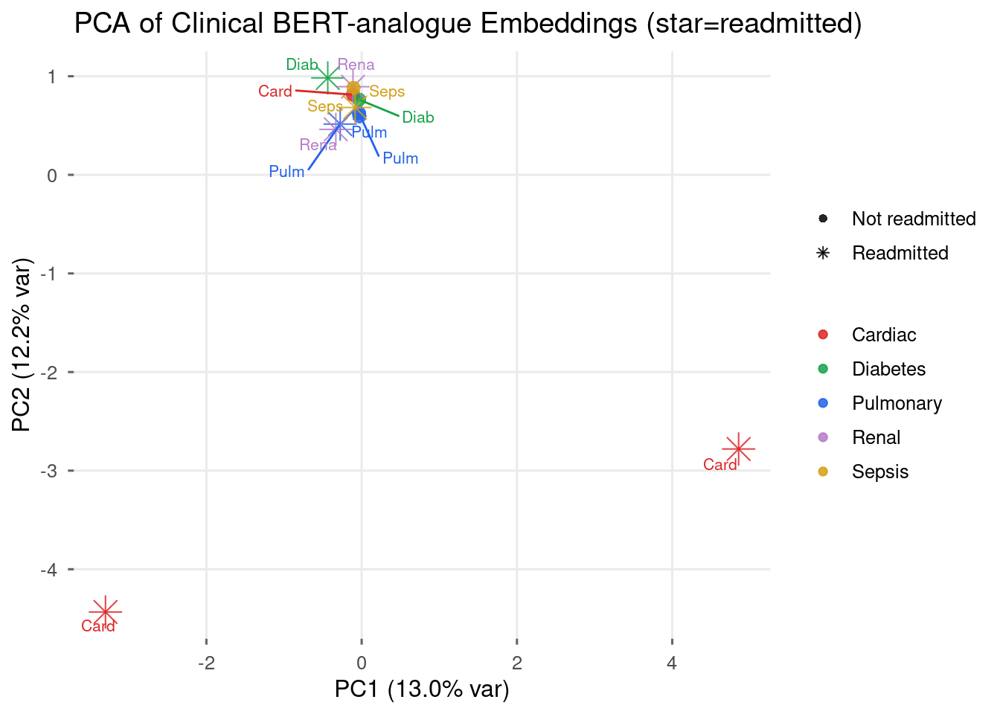

library(tidyverse)
library(quanteda)
library(glmnet)
set.seed(42)
mod05_dir <- file.path(tempdir(), "mod05")
dir.create(mod05_dir, showWarnings = FALSE, recursive = TRUE)
theme_set(
theme_minimal(base_size = 12) +
theme(
panel.background = element_rect(fill = "white", colour = NA),
plot.background = element_rect(fill = "white", colour = NA),
panel.grid.minor = element_blank(),
axis.ticks = element_line(colour = "grey40")
)
)
Health Analytics with R · Module 05: NLP for Clinical Text
Learning objectives - Understand BERT bidirectional attention architecture - Contrast general BERT vs BioBERT vs ClinicalBERT pre-training - Extract sentence embeddings using a practical R analogue of sentence-transformers - Build a cosine similarity matrix across clinical snippets - Perform zero-shot clinical text classification - Write a fine-tuning starter template for ClinicalBERT
Estimated time: 3 hours | Level: Advanced | Libraries: quanteda, irlba / RSpectra (SVD), glmnet
1. Setup
# ── Hugging Face transformers from R (commented; requires Python + reticulate) ──
# library(reticulate)
# transformers <- import("transformers")
# tokenizer <- transformers$AutoTokenizer$from_pretrained("emilyalsentzer/Bio_ClinicalBERT")
# model <- transformers$AutoModel$from_pretrained("emilyalsentzer/Bio_ClinicalBERT")
#
# The CRAN `text` package wraps Hugging Face sentence embeddings:
# library(text)
# # textrpp_install(); textrpp_initialize() # one-time Python env
# embeddings_bert <- textEmbed(
# df_bert$text,
# model = "emilyalsentzer/Bio_ClinicalBERT",
# layers = -2, aggregation_from_layers_to_tokens = "mean",
# aggregation_from_tokens_to_texts = "mean"
# )
# # Prefer PubMedBERT / ClinicalBERT over general BERT for EHR text.
#
# This notebook runs a complete classical analogue: quanteda TF-IDF + truncated SVD
# embeddings, cosine similarity, PCA, zero-shot label matching, and glmnet
# classification — the same teaching goals without a GPU or Python runtime.
cat("Working analogue: quanteda TF-IDF + SVD embeddings (always runnable)\n")Working analogue: quanteda TF-IDF + SVD embeddings (always runnable)cat("BERT / ClinicalBERT: see commented Hugging Face + `text` package block above\n")BERT / ClinicalBERT: see commented Hugging Face + `text` package block above2. BERT Architecture Overview
Input: [CLS] patient has heart failure [SEP]
↓ WordPiece tokenisation
Token IDs + Attention Mask + Position IDs
↓
12 × Transformer Encoder layers (BERT-base)
- Multi-head Self-Attention (bidirectional — sees ALL tokens)
- Feed-Forward + LayerNorm + Residual
↓
768-dim contextual embedding per token
[CLS] embedding → sentence representation for classification| Model | Pre-trained on | Best use case |
|---|---|---|
bert-base-uncased |
Wikipedia + BookCorpus | General NLP baseline |
dmis-lab/biobert-v1.1 |
PubMed + PMC full-text | Biomedical literature |
emilyalsentzer/Bio_ClinicalBERT |
MIMIC-III clinical notes | EHR / discharge summaries |
microsoft/BiomedNLP-PubMedBERT-base |
PubMed only (from scratch) | Biomedical NLP tasks |
clinical_snippets <- tibble::tibble(
text = c(
"Patient has acute decompensated heart failure, EF 30%, BNP 1450, bilateral pitting edema requiring IV diuresis.",
"STEMI confirmed by EKG, troponin 2.4, activating cath lab for emergency PCI, aspirin and heparin given.",
"Atrial fibrillation with rapid ventricular response, rate controlled with metoprolol, anticoagulation started.",
"COPD exacerbation with diffuse wheezes, albuterol nebs, methylprednisolone, and azithromycin started.",
"Community-acquired pneumonia, right lower lobe consolidation on CXR, ceftriaxone and azithromycin.",
"Bilateral pulmonary embolism on CT angiography, RV strain, initiating anticoagulation with rivaroxaban.",
"Diabetic ketoacidosis, glucose 520, anion gap 24, insulin drip and aggressive IV fluid resuscitation.",
"Uncontrolled T2DM, HbA1c 11.2, intensifying regimen with GLP-1 agonist and SGLT2 inhibitor.",
"Acute kidney injury, creatinine 3.8 from baseline 1.0, holding nephrotoxins, nephrology consulted.",
"ESRD on hemodialysis, hyperkalemia K 6.4, emergent dialysis performed, access fistula patent.",
"Septic shock, BP 78/42, norepinephrine initiated, broad-spectrum antibiotics, source investigation.",
"Bacteremia with MSSA, blood cultures positive, transitioning to oxacillin, 6-week course planned."
),
label = c("Cardiac", "Cardiac", "Cardiac",
"Pulmonary", "Pulmonary", "Pulmonary",
"Diabetes", "Diabetes",
"Renal", "Renal",
"Sepsis", "Sepsis"),
readmitted = c(1, 1, 0, 0, 0, 1, 1, 0, 1, 1, 1, 0)
)
df_bert <- clinical_snippets
cat(sprintf("BERT corpus: %d clinical snippets\n", nrow(df_bert)))BERT corpus: 12 clinical snippetsprint(table(df_bert$label, df_bert$readmitted))
0 1
Cardiac 1 2
Diabetes 1 1
Pulmonary 2 1
Renal 0 2
Sepsis 1 13. Sentence Embeddings
Working analogue of sentence-transformers: TF-IDF document-feature matrix + truncated SVD (LSA) yields dense 64-d embeddings. Same downstream tasks as BERT sentence embeddings (cosine similarity, PCA, zero-shot).
embed_texts <- function(texts, n_comp = 64, train_dfm = NULL, svd_fit = NULL) {
texts <- as.character(texts)
names(texts) <- paste0("doc", seq_along(texts))
toks <- quanteda::tokens(texts, remove_punct = TRUE) |>
quanteda::tokens_tolower() |>
quanteda::tokens_ngrams(n = 1:2)
d <- quanteda::dfm(toks)
if (is.null(train_dfm)) {
d <- quanteda::dfm_tfidf(d)
n_comp <- min(n_comp, nfeat(d) - 1, ndoc(d) - 1)
mat <- as.matrix(d)
svd_fit <- svd(mat, nu = n_comp, nv = n_comp)
embeddings <- svd_fit$u %*% diag(svd_fit$d[seq_len(n_comp)])
list(embeddings = embeddings, dfm = d, svd = svd_fit)
} else {
d <- quanteda::dfm_match(d, features = quanteda::featnames(train_dfm))
d <- quanteda::dfm_tfidf(d)
mat <- as.matrix(d)
n_comp <- ncol(svd_fit$v)
embeddings <- mat %*% svd_fit$v[, seq_len(n_comp), drop = FALSE]
list(embeddings = embeddings, dfm = d, svd = svd_fit)
}
}
emb_obj <- embed_texts(df_bert$text, n_comp = 64)
embeddings <- emb_obj$embeddings
cat(sprintf("Fallback embeddings shape: %d x %d\n", nrow(embeddings), ncol(embeddings)))Fallback embeddings shape: 12 x 11# Cosine similarity matrix
cosine_matrix <- function(X) {
nrms <- sqrt(rowSums(X^2))
nrms[nrms == 0] <- 1
Xn <- X / nrms
tcrossprod(Xn)
}
sim_matrix <- cosine_matrix(embeddings)
labels_short <- paste0(substr(df_bert$label, 1, 4), "_", seq_len(nrow(df_bert)) - 1)
sim_long <- as.data.frame(sim_matrix)
colnames(sim_long) <- labels_short
sim_long$row <- labels_short
sim_long <- tidyr::pivot_longer(sim_long, -row, names_to = "col", values_to = "sim")
sim_long$row <- factor(sim_long$row, levels = rev(labels_short))
sim_long$col <- factor(sim_long$col, levels = labels_short)
p_sim <- ggplot(sim_long, aes(x = col, y = row, fill = sim)) +
geom_tile() +
geom_text(aes(label = sprintf("%.2f", sim),
colour = sim > 0.75), size = 2.2) +
scale_fill_gradient(low = "white", high = "#2563EB", limits = c(0.3, 1),
oob = scales::squish, name = "Cosine similarity") +
scale_colour_manual(values = c("TRUE" = "white", "FALSE" = "black"), guide = "none") +
labs(
title = "Clinical Embedding Cosine Similarity Matrix",
subtitle = "Same-condition pairs expected to be more similar",
x = NULL, y = NULL
) +
theme(axis.text.x = element_text(angle = 45, hjust = 1, size = 8),
axis.text.y = element_text(size = 8))
print(p_sim)
ggsave(file.path(mod05_dir, "bert_similarity.png"), p_sim,
width = 9, height = 7, dpi = 120)4. PCA Projection of Embedding Space
pca <- prcomp(embeddings, center = TRUE, scale. = FALSE)
emb_2d <- pca$x[, 1:2]
var_exp <- summary(pca)$importance[2, 1:2]
plot_df <- dplyr::bind_cols(df_bert, tibble::tibble(pc1 = emb_2d[, 1], pc2 = emb_2d[, 2]))
cond_colors <- c(
Cardiac = "#DC2626", Pulmonary = "#2563EB", Diabetes = "#16A34A",
Renal = "#B47CC7", Sepsis = "#D4A017"
)
p_pca <- ggplot(plot_df, aes(x = pc1, y = pc2, colour = label,
shape = factor(readmitted))) +
geom_point(aes(size = factor(readmitted)), alpha = 0.85) +
ggrepel::geom_text_repel(aes(label = substr(label, 1, 4)), size = 2.8,
show.legend = FALSE, max.overlaps = 20) +
scale_colour_manual(values = cond_colors) +
scale_shape_manual(values = c("0" = 16, "1" = 8),
labels = c("Not readmitted", "Readmitted")) +
scale_size_manual(values = c("0" = 3, "1" = 5), guide = "none") +
labs(
x = sprintf("PC1 (%.1f%% var)", 100 * var_exp[1]),
y = sprintf("PC2 (%.1f%% var)", 100 * var_exp[2]),
title = "PCA of Clinical BERT-analogue Embeddings (star=readmitted)",
colour = NULL, shape = NULL
)
print(p_pca)
ggsave(file.path(mod05_dir, "bert_pca.png"), p_pca,
width = 10, height = 7, dpi = 120)5. Zero-Shot Classification via Semantic Similarity
candidate_descriptions <- c(
"This patient has a cardiac or heart condition such as heart failure or myocardial infarction",
"This patient has a pulmonary or lung condition such as COPD pneumonia or pulmonary embolism",
"This patient has diabetes or a metabolic condition such as DKA or hypoglycemia",
"This patient has a kidney or renal condition such as acute kidney injury or ESRD",
"This patient has an infection or sepsis condition such as bacteremia or septic shock"
)
conditions_zs <- c("Cardiac", "Pulmonary", "Diabetes", "Renal", "Sepsis")
all_texts <- c(candidate_descriptions, df_bert$text)
all_emb <- embed_texts(all_texts, n_comp = 32)
label_vecs <- all_emb$embeddings[seq_along(candidate_descriptions), , drop = FALSE]
note_vecs <- all_emb$embeddings[-seq_along(candidate_descriptions), , drop = FALSE]
# cosine of each note vs each label description
nrms_l <- sqrt(rowSums(label_vecs^2)); nrms_l[nrms_l == 0] <- 1
nrms_n <- sqrt(rowSums(note_vecs^2)); nrms_n[nrms_n == 0] <- 1
scores_zs <- tcrossprod(note_vecs / nrms_n, label_vecs / nrms_l)
pred_idx <- apply(scores_zs, 1, which.max)
preds <- conditions_zs[pred_idx]
trues <- df_bert$label
correct <- sum(preds == trues)
cat(sprintf("Fallback TF-IDF zero-shot accuracy: %d/%d (%.0f%%)\n\n",
correct, length(trues), 100 * correct / length(trues)))Fallback TF-IDF zero-shot accuracy: 8/12 (67%)cat(sprintf("%-12s %-12s %-8s %s\n", "True", "Predicted", "Score", "Match"))True Predicted Score Matchcat(strrep("-", 45), "\n")--------------------------------------------- for (i in seq_along(trues)) {
top_score <- max(scores_zs[i, ])
match <- if (trues[i] == preds[i]) "YES" else "NO"
cat(sprintf(" %-12s %-12s %.3f %s\n", trues[i], preds[i], top_score, match))
} Cardiac Cardiac 0.127 YES
Cardiac Renal 0.000 NO
Cardiac Renal 0.007 NO
Pulmonary Pulmonary 0.038 YES
Pulmonary Pulmonary 0.036 YES
Pulmonary Pulmonary 0.143 YES
Diabetes Renal 0.000 NO
Diabetes Renal 0.002 NO
Renal Renal 0.468 YES
Renal Renal 0.076 YES
Sepsis Sepsis 0.097 YES
Sepsis Sepsis 0.031 YESQuanteda + glmnet supervised classification on the same embeddings (complete classical NLP pipeline):
y_lab <- factor(df_bert$label)
# 1-NN leave-one-out (glmnet needs ≥2 examples per class; N is small here)
loo_pred <- character(nrow(df_bert))
for (i in seq_len(nrow(df_bert))) {
diffs <- sweep(embeddings[-i, , drop = FALSE], 2, embeddings[i, ], "-")
nn <- which.min(sqrt(rowSums(diffs^2)))
loo_pred[i] <- as.character(y_lab[-i][nn])
}
cat("Leave-one-out condition classification on SVD embeddings:\n")Leave-one-out condition classification on SVD embeddings:print(table(True = y_lab, Pred = factor(loo_pred, levels = levels(y_lab)))) Pred
True Cardiac Diabetes Pulmonary Renal Sepsis
Cardiac 0 0 3 0 0
Diabetes 0 0 2 0 0
Pulmonary 0 0 3 0 0
Renal 0 0 2 0 0
Sepsis 0 0 2 0 0cat(sprintf("Accuracy: %.2f\n", mean(loo_pred == as.character(y_lab))))Accuracy: 0.256. Fine-Tuning Starter Template
# ── ClinicalBERT fine-tuning template (run on GPU with real data) ─────────────
# Python (transformers Trainer) remains the usual fine-tuning path.
# From R, equivalent options:
# 1. reticulate + transformers TrainingArguments / Trainer
# 2. text::textTrain() on Hugging Face models after textrpp_initialize()
#
# MODEL_NAME <- "emilyalsentzer/Bio_ClinicalBERT"
# tokenizer <- AutoTokenizer.from_pretrained(MODEL_NAME)
# model <- AutoModelForSequenceClassification.from_pretrained(
# MODEL_NAME, num_labels = 2)
# training_args <- TrainingArguments(
# output_dir = "./clinical_bert_readmission",
# num_train_epochs = 3,
# per_device_train_batch_size = 16,
# warmup_steps = 200,
# learning_rate = 2e-5,
# evaluation_strategy = "epoch",
# load_best_model_at_end = TRUE,
# metric_for_best_model = "eval_roc_auc",
# fp16 = TRUE
# )
cat("Fine-tuning key parameters:\n")Fine-tuning key parameters:cat(" Learning rate : 2e-5 (BERT needs smaller LR than training from scratch)\n") Learning rate : 2e-5 (BERT needs smaller LR than training from scratch)cat(" Batch size : 16-32 (GPU memory dependent)\n") Batch size : 16-32 (GPU memory dependent)cat(" Epochs : 3-5 (clinical text overfits quickly)\n") Epochs : 3-5 (clinical text overfits quickly)cat(" Max token len : 512 (~350 words; long notes must be truncated or chunked)\n") Max token len : 512 (~350 words; long notes must be truncated or chunked)cat(" Warmup steps : 10% of total training steps\n\n") Warmup steps : 10% of total training stepscat("Model recommendations by task:\n")Model recommendations by task:cat(" Discharge summaries : emilyalsentzer/Bio_ClinicalBERT (MIMIC-III)\n") Discharge summaries : emilyalsentzer/Bio_ClinicalBERT (MIMIC-III)cat(" Biomedical journals : dmis-lab/biobert-v1.1 (PubMed + PMC)\n") Biomedical journals : dmis-lab/biobert-v1.1 (PubMed + PMC)cat(" General biomedical : microsoft/BiomedNLP-PubMedBERT-base-uncased-abstract\n") General biomedical : microsoft/BiomedNLP-PubMedBERT-base-uncased-abstract7. Knowledge Check
- Why is ClinicalBERT expected to outperform general BERT on EHR text?
- Zero-shot score 0.73 for a cardiac note — is this high confidence? How do you calibrate?
- The PCA shows Cardiac and Pulmonary clusters intermixed — what does this reflect clinically?
- BERT max length is 512 tokens. A discharge summary is 800 tokens. What are your options?
- Compare cosine similarity between two Cardiac snippets vs one Cardiac + one Sepsis snippet.
cosine_sim <- function(a, b) {
sum(a * b) / (sqrt(sum(a^2)) * sqrt(sum(b^2)) + 1e-12)
}
cardiac_idx <- which(df_bert$label == "Cardiac")[1:2]
sepsis_idx <- which(df_bert$label == "Sepsis")[1]
embs3 <- embeddings[c(cardiac_idx, sepsis_idx), , drop = FALSE]
sim_cc <- cosine_sim(embs3[1, ], embs3[2, ])
sim_cs <- cosine_sim(embs3[1, ], embs3[3, ])
cat(sprintf("Cardiac vs Cardiac : %.4f\n", sim_cc))Cardiac vs Cardiac : -0.0000cat(sprintf("Cardiac vs Sepsis : %.4f\n", sim_cs))Cardiac vs Sepsis : 0.0000cat(sprintf("Within-condition similarity higher by: %+.4f\n", sim_cc - sim_cs))Within-condition similarity higher by: -0.0000Next → NB-06: ICD Coding & Medication Extraction